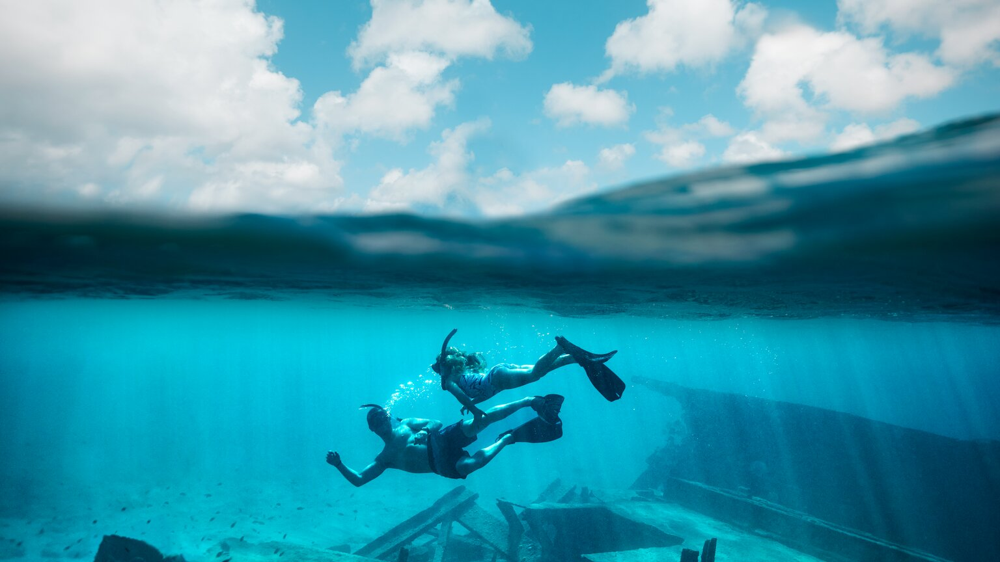

Turismo
Esta pequeña isla caribeña, ubicada frente a la costa de América del Sur, ofrece playas increíbles, deportes acuáticos, senderos de montaña y muchas experiencias culturales.
En Aruba se habla el curioso idioma Papiamento el cual es una lengua hablada en las Antillas Neerlandesas: las islas de Curazao, Bonaire y en Aruba, todas forman parte del Reino de los Países Bajos. Posee dos formas de escritura: la fonética, aplicada en Curazao y Bonaire, y la etimológica, basada en el idioma español, aplicada en Aruba.
Aruba está ubicada fuera de la zona de huracanes y cuenta con temperaturas cálidas durante todo el año, lo que atrae a multitudes de turistas fanáticos del sol. Las mejores playas de la isla se encuentran en la costa oeste, a lo largo de una franja de 11.2 kilómetros (7 mi) bordeada de resorts. Una de los más populares es la Playa de Eagle (Eagle Beach), también conocida por sus nidos de tortugas y árboles divi divi torcidos por el viento. Si prefieres las playas agrestes y las bahías recónditas, dirígete a las ventosas costas del otro extremo.
Eagle Beach fue reconocida como la playa número uno del Caribe y la segunda del mundo, gracias a las reseñas y calificaciones sobresalientes de los viajeros, según Tripadvisor® en los Travelers’ Choice® Best of the Best de 2023 en la categoría de playas

Visita lugares submarinos durante una excursión de snorkel o buceo. La Playa de Arashi, ubicada en el extremo noroeste de Aruba, y la Playa de Mangel Halto, situada a orillas de la costa oeste son excelentes sitios para practicar snorkel. Podrás elegir entre más de 20 lugares únicos para bucear a orillas de la costa sur. Echa un vistazo a las barracudas y los peces payaso, además de muchas otras especies marinas. Observa buques naufragados cubiertos de coral, incluidos los restos del Antilla, un buque de carga alemán de la Segunda Guerra Mundial. Si decides no bucear, puedes hacer una excursión submarina por el lecho del mar.
En la superficie, los vientos alisios constantes son ideales para practicar deportes acuáticos, como kitesurf o parasailing. En julio, observa mientras algunos de los mejores surfistas del mundo participan en la competencia Aruba Hi Winds.
Lejos del agua también encontrarás muchas actividades divertidas en tierra firme. Escala a la cima del Monte Jamanota, el punto más elevado de Aruba. Participa de una travesía en cuatro ruedas por la pequeña isla y haz una parada en el Faro de California y las Ruinas de las minas de oro de Bushiribana. Desafía a tus amigos en un partido de golf en Tierra Del Sol Country Club and Golf Course.

Visita la ciudad portuaria de Oranjestad, la capital de Aruba. Admira los edificios de color pastel que son testimonio del legado holandés de Aruba. Aprende sobre la historia de la isla en el Museo Arqueológico Nacional de Aruba. Para la hora de la cena, reserva una mesa en un restaurante con vista al mar y prueba un rijsttafel (mesa de arroz) de hasta 40 platillos. Termina la noche en un casino o bailando música electrónica en una discoteca.
Visita Aruba y deléitate con sus playas de arena blanca, el agua transparente y las emocionantes aventuras al aire libre.